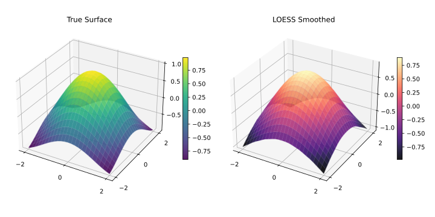

Multivariate LOESS
Smoothing over multiple predictor dimensions simultaneously.
Overview
Standard LOESS operates on a single predictor \(x\). Setting dimensions > 1 extends the neighbourhood search and local polynomial fit into an \(n\)-dimensional predictor space, enabling surface smoothing over spatial grids, time–altitude combinations, and similar multi-predictor datasets. x is passed as a flat, row-major array of length y.length * dimensions.

| Dimensions | Use Case | Input Shape |
|---|---|---|
|
Time series, 1D signal (default) |
|
|
Spatial surface, 2-predictor model |
|
|
High-dimensional regression |
|
|
Computational cost: Neighbourhood search scales with |
1D — Standard (Default)
Single predictor. No configuration required.
import fastloess.Loess;
import fastloess.Options;
import fastloess.Result;
public class Example {
public static void main(String[] args) {
int n = 100;
double[] x = new double[n];
double[] y = new double[n];
for (int i = 0; i < n; i++) {
x[i] = i * 2 * Math.PI / (n - 1);
y[i] = Math.sin(x[i]) + 0.1;
}
Options options = Options.builder()
.fraction(0.3)
.build();
try (Loess model = new Loess(options)) {
Result result = model.fit(x, y);
System.out.println("First smoothed value (1D LOESS): " + result.y()[0]);
}
}
}First smoothed value (1D LOESS): 0.24731032286452282D — Spatial Surface
Two predictors (e.g., latitude/longitude, time/altitude). Pass a flat, row-major array of length n*2 as x.
import fastloess.Loess;
import fastloess.Options;
import fastloess.Result;
public class Example {
public static void main(String[] args) {
int n = 100;
double[] x2d = new double[n * 2]; // row-major: [lat0, lon0, lat1, lon1, ...]
double[] z = new double[n];
for (int i = 0; i < n; i++) {
double lat = i * 2 * Math.PI / (n - 1);
double lon = i * 2 * Math.PI / (n - 1);
x2d[i * 2] = lat;
x2d[i * 2 + 1] = lon;
z[i] = Math.sin(lat) + Math.cos(lon);
}
Options options = Options.builder()
.dimensions(2)
.fraction(0.3)
.build();
try (Loess model = new Loess(options)) {
Result result = model.fit(x2d, z);
System.out.println("First smoothed value (2D LOESS, lat/lon): " + result.y()[0]);
}
}
}First smoothed value (2D LOESS, lat/lon): 1.15195596349743573D and Higher
Three or more predictors. The neighbourhood radius grows in each additional dimension, so a larger fraction (or smaller dataset) is typically needed.
import fastloess.Loess;
import fastloess.Options;
import fastloess.Result;
public class Example {
public static void main(String[] args) {
int n = 100;
double[] x3d = new double[n * 3]; // row-major: [x1_0, x2_0, x3_0, x1_1, x2_1, x3_1, ...]
double[] y = new double[n];
for (int i = 0; i < n; i++) {
double x1 = i * 2 * Math.PI / (n - 1);
double x2 = (double) i / (n - 1);
double x3 = 1.0 - (double) i / (n - 1);
x3d[i * 3] = x1;
x3d[i * 3 + 1] = x2;
x3d[i * 3 + 2] = x3;
y[i] = Math.sin(x1) + x2 - x3;
}
Options options = Options.builder()
.dimensions(3)
.fraction(0.5)
.build();
try (Loess model = new Loess(options)) {
Result result = model.fit(x3d, y);
System.out.println("First smoothed value (3D LOESS): " + result.y()[0]);
}
}
}First smoothed value (3D LOESS): -0.786686517390919Distance Metrics for Multivariate Data
When dimensions > 1 you can also control how inter-point distances are computed.
| Metric | Description | When to Use |
|---|---|---|
|
Each dimension scaled to unit range (default) |
Predictors on different scales |
|
Raw Euclidean distance |
Predictors already on same scale |
|
Generalised Minkowski (\(L_p\)) norm |
Custom distance geometry |
|
Per-dimension weighted Euclidean |
Domain-specific importance |
See API Reference for the full list of options.